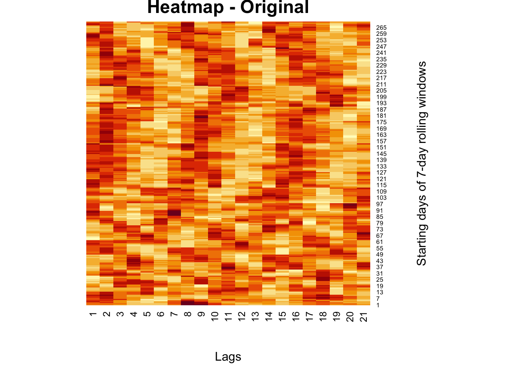
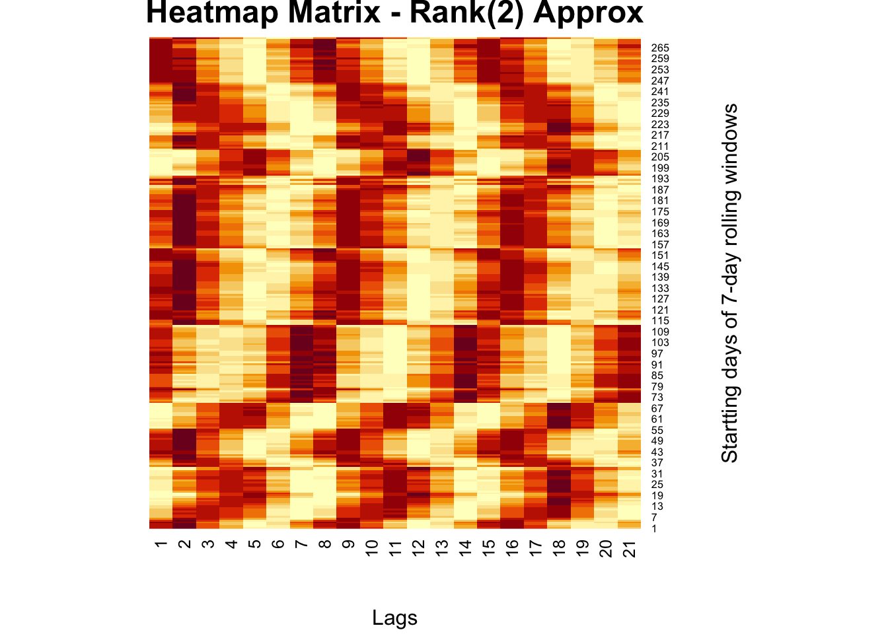
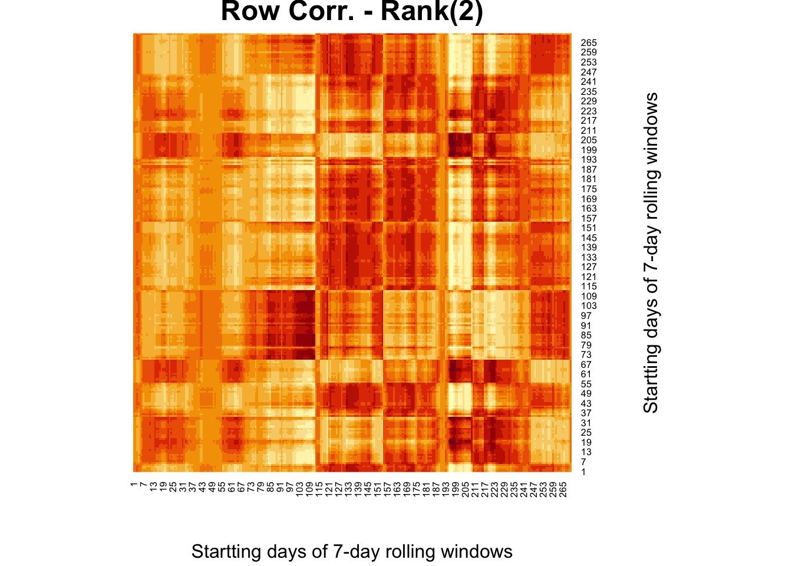
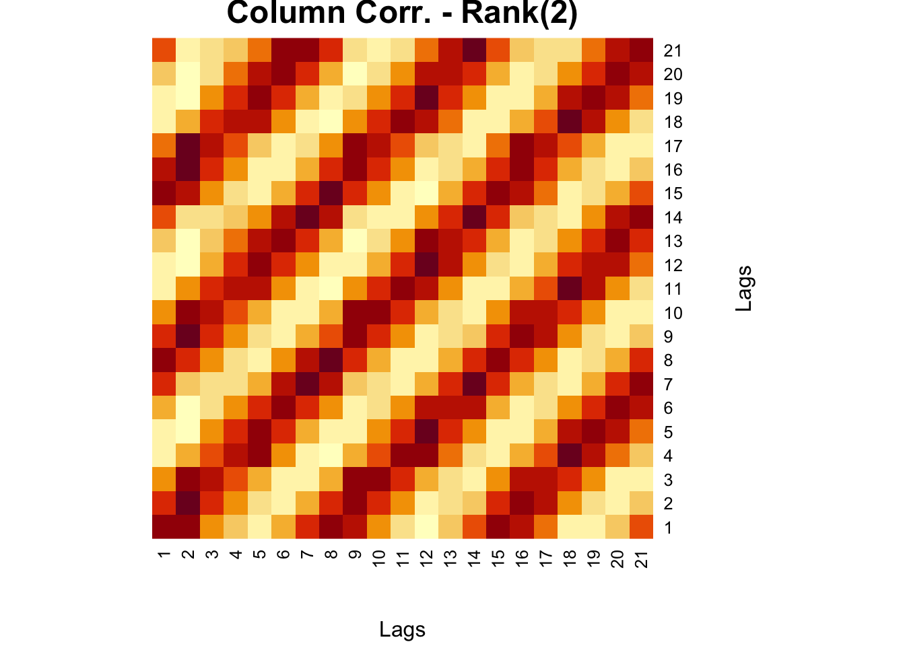

Chapter 28 Decompositions
28.1 Matrix Decomposition
Matrix decomposition, also known as matrix factorization, is a process of breaking down a matrix into simpler components that can be used to simplify calculations, solve systems of equations, and gain insight into the underlying structure of the matrix.
Matrix decomposition plays an important role in machine learning, particularly in the areas of dimensionality reduction, data compression, and feature extraction. For example, Principal Component Analysis (PCA) is a popular method for dimensionality reduction, which involves decomposing a high-dimensional data matrix into a lower-dimensional representation while preserving the most important information. PCA achieves this by finding the eigenvectors and eigenvalues of the covariance matrix of the data and then selecting the top eigenvectors as the new basis for the data.
Singular Value Decomposition (SVD) is also commonly used in recommender systems to find latent features in user-item interaction data. SVD decomposes the user-item interaction matrix into three matrices: a left singular matrix, a diagonal matrix of singular values, and a right singular matrix. The left and right singular matrices represent user and item features, respectively, while the singular values represent the importance of those features.
Rank optimization is another method that finds a low-rank approximation of a matrix that best fits a set of observed data. In other words, it involves finding a lower-rank approximation of a given matrix that captures the most important features of the original matrix. For example, SVD decomposes a matrix into a product of low-rank matrices, while PCA finds the principal components of a data matrix, which can be used to create a lower-dimensional representation of the data. In machine learning, rank optimization is often used in applications such as collaborative filtering, image processing, and data compression. By finding a low-rank approximation of a matrix, it is possible to reduce the amount of memory needed to store the matrix and improve the efficiency of algorithms that work with the matrix.
We start with the eigenvalue decomposition (EVD), which is the foundation to many matrix decomposition methods
28.2 Eigenvectors and eigenvalues
Eigenvalues and eigenvectors have many important applications in linear algebra and beyond. For example, in machine learning, principal component analysis (PCA) involves computing the eigenvectors and eigenvalues of the covariance matrix of a data set, which can be used to reduce the dimensionality of the data while preserving its important features.
Almost all vectors change direction, when they are multiplied by a matrix, \(\mathbf{A}\), except for certain vectors (\(\mathbf{v}\)) that are in the same direction as \(\mathbf{A} \mathbf{v}.\) Those vectors are called “eigenvectors”.
We can see how we obtain the eigenvalues and eigenvectors of a matrix \(\mathbf{A}\). If
\[ \mathbf{A} \mathbf{v}=\lambda \mathbf{v} \]
Then,
\[ \begin{aligned} &\mathbf{A} \mathbf{v}-\lambda \mathbf{I} \mathbf{v}=0 \\ &(\mathbf{A}-\lambda \mathbf{I}) \mathbf{v}=0, \end{aligned} \] where \(\mathbf{I}\) is the identity matrix. It turns out that this equation is equivalent to:
\[ \operatorname{det}(\mathbf{A}-\lambda \mathbf{I})=0, \]
because \(\operatorname{det}(\mathbf{A}-\lambda \mathbf{I}) \equiv(\mathbf{A}-\lambda \mathbf{I}) \mathbf{v}=0\). The reason is that we want a non-trivial solution to \((\mathbf{A}-\lambda \mathbf{I}) \mathbf{v}=0\). Therefore, \((\mathbf{A}-\lambda \mathbf{I})\) should be non-invertible. Otherwise, if it is invertible, we get \(\mathbf{v}=(\mathbf{A}-\lambda \mathbf{I})^{-1} \cdot 0=0\), which is a trivial solution. Since a matrix is non-invertible if its determinant is 0 . Thus, \(\operatorname{det}(\mathbf{A}-\lambda \mathbf{I})=0\) for non-trivial solutions.
We start with a square matrix, \(\mathbf{A}\), like
\[ A =\left[\begin{array}{cc} 1 & 2 \\ 3 & -4 \end{array}\right] \] \[ \begin{aligned} \det (\mathbf{A}-\lambda \mathbf{I})= & \left|\begin{array}{cc} 1-\lambda & 2 \\ 3 & -4-\lambda \end{array}\right|=(1-\lambda)(-4-\lambda)-2 \cdot 3 \\ & =-4-\lambda+4 \lambda+\lambda^2-6 \\ & =\lambda^2+3 \lambda-10 \\ & =(\lambda-2)(\lambda+5)=0 \\ & \therefore \lambda_1=2, ~ \lambda_2=-5 \\ & \end{aligned} \]
We have two eigenvalues. We now need to consider each eigenvalue indivudally
$$ \[\begin{gathered} \lambda_1=2 \\ (A 1-\lambda I) \mathbf{v}=0 \\ {\left[\begin{array}{cc} 1-\lambda_1 & 2 \\ 3 & -4-\lambda_1 \end{array}\right]\left[\begin{array}{l} v_1 \\ v_2 \end{array}\right]=\left[\begin{array}{l} 0 \\ 0 \end{array}\right]} \\ {\left[\begin{array}{cc} -1 & 2 \\ 3 & -6 \end{array}\right]\left[\begin{array}{l} v_1 \\ v_2 \end{array}\right]=\left[\begin{array}{l} 0 \\ 0 \end{array}\right]} \end{gathered}\]$$ Hence,
\[ \begin{aligned} -v_1+2 v_2=0 \\ 3 v_1-6 v_2=0\\ v_1=2, ~ v_2=1 \end{aligned} \] And,
$$ \[\begin{aligned} & \lambda_2=-5 \\ & {\left[\begin{array}{cc} 1-\lambda_2 & 2 \\ 3 & -4-\lambda_2 \end{array}\right]\left[\begin{array}{l} v_1 \\ v_2 \end{array}\right]=\left[\begin{array}{l} 0 \\ 0 \end{array}\right]} \\ & {\left[\begin{array}{cc} 6 & 2 \\ 3 & 1 \end{array}\right]\left[\begin{array}{l} v_1 \\ v_2 \end{array}\right]=\left[\begin{array}{l} 0 \\ 0 \end{array}\right]} \end{aligned}\]$$ Hence,
$$ \[\begin{gathered} 6 v_1+2 v_2=0 \\ 3 v_1+v_2=0 \\ v_1=-1,~ v_2=3 \end{gathered}\]$$ We have two eigenvalues
\[ \begin{aligned} & \lambda_1=2 \\ & \lambda_2=-5 \end{aligned} \]
And two corresponding eigenvectors
\[ \left[\begin{array}{l} 2 \\ 1 \end{array}\right],\left[\begin{array}{c} -1 \\ 3 \end{array}\right] \] for \(\lambda_1=2\)
\[ \left[\begin{array}{cc} 1 & 2 \\ 3 & -4 \end{array}\right]\left[\begin{array}{l} 2 \\ 1 \end{array}\right]=\left[\begin{array}{l} 2+2 \\ 6-4 \end{array}\right]=\left[\begin{array}{l} 4 \\ 2 \end{array}\right]=2\left[\begin{array}{l} 2 \\ 1 \end{array}\right] \] Let’s see the solution in R
## eigen() decomposition
## $values
## [1] -5 2
##
## $vectors
## [,1] [,2]
## [1,] -0.3162278 0.8944272
## [2,] 0.9486833 0.4472136The eigenvectors are typically normalized by dividing by its length \(\sqrt{v^{\prime} v}\), which is 5 in our case for \(\lambda_1=2\).
## [1] 0.8944272 0.4472136There some nice properties that we can observe in this application.
# Sum of eigenvalues = sum of diagonal terms of A (Trace of A)
ev <- eigen(A)$values
sum(ev) == sum(diag(A))## [1] TRUE## [1] TRUE# Diagonal matrix D has eigenvalues = diagonal elements
D <- matrix(c(2, 0, 0, 5), 2, 2)
eigen(D)$values == sort(diag(D), decreasing = TRUE)## [1] TRUE TRUEWe can see that, if one of the eigenvalues is zero for a matrix, the determinant of the matrix will be zero. We willl return to this issue in Singluar Value Decomposition.
Let’s finish this chapter with Diagonalization and Eigendecomposition.
Suppose we have \(m\) linearly independent eigenvectors (\(\mathbf{v_i}\) is eigenvector \(i\) in a column vector in \(\mathbf{V}\)) of \(\mathbf{A}\).
\[ \mathbf{AV}=\mathbf{A}\left[\mathbf{v_1} \mathbf{v_2} \cdots \mathbf{v_m}\right]=\left[\mathbf{A} \mathbf{v_1} \mathbf{A} \mathbf{v_2} \ldots \mathbf{A} \mathbf{v_m}\right]=\left[\begin{array}{llll} \lambda_1 \mathbf{v_1} & \lambda_2\mathbf{v_2} & \ldots & \lambda_m \mathbf{v_m} \end{array}\right] \]
because
\[ \mathbf{A} \mathbf{v}=\lambda \mathbf{v} \]
$$ == $$ So that
\[ \mathbf{A V=V \Lambda} \] Hence,
\[ \mathbf{A}=\mathbf{V} \Lambda \mathbf{V}^{-1} \]
Eigendecomposition (a.k.a. spectral decomposition) decomposes a matrix \(\mathbf{A}\) into a multiplication of a matrix of eigenvectors \(\mathbf{V}\) and a diagonal matrix of eigenvalues \(\mathbf{\Lambda}\).
This can only be done if a matrix is diagonalizable. In fact, the definition of a diagonalizable matrix \(\mathbf{A} \in \mathbb{R}^{n \times n}\) is that it can be eigendecomposed into \(n\) eigenvectors, so that \(\mathbf{V}^{-1} \mathbf{A} \mathbf{V}=\Lambda\).
\[ \begin{align} \mathbf{A}^2&=(\mathbf{V} \Lambda \mathbf{V}^{-1})(\mathbf{V} \Lambda \mathbf{V}^{-1})\\ &=\mathbf{V} \Lambda \text{I} \Lambda \mathbf{V}^{-1}\\ &=\mathbf{V} \Lambda^2 \mathbf{V}^{-1}\\ \end{align} \] in general
\[ \mathbf{A}^k=\mathbf{V} \Lambda^k \mathbf{V}^{-1} \]
Example:
## [,1] [,2] [,3]
## [1,] 66 47 40
## [2,] 70 34 69
## [3,] 28 79 61## eigen() decomposition
## $values
## [1] 164.69386 -32.04717 28.35331
##
## $vectors
## [,1] [,2] [,3]
## [1,] -0.5289779 0.1173621 -0.69930710
## [2,] -0.6001133 -0.7741817 -0.04690701
## [3,] -0.6000387 0.6219879 0.71328067V = eigen(A)$vectors
Lam = diag(eigen(A)$values)
# Prove that AV = VLam
round(A %*% V, 4) == round(V %*% Lam, 4)## [,1] [,2] [,3]
## [1,] TRUE TRUE TRUE
## [2,] TRUE TRUE TRUE
## [3,] TRUE TRUE TRUE## [,1] [,2] [,3]
## [1,] TRUE TRUE TRUE
## [2,] TRUE TRUE TRUE
## [3,] TRUE TRUE TRUEAnd, matrix inverse with eigendecomposition:
\[ \mathbf{A}^{-1}=\mathbf{V} \Lambda^{-1} \mathbf{V}^{-1} \]
Example:
## [,1] [,2] [,3]
## [1,] 29 70 85
## [2,] 91 38 62
## [3,] 28 1 57## [,1] [,2] [,3]
## [1,] -0.007992129 0.014833301 -0.00421638
## [2,] 0.013108764 0.002761539 -0.02255194
## [3,] 0.003695980 -0.007334982 0.02001071## [,1] [,2] [,3]
## [1,] -0.007992129 0.014833301 -0.00421638
## [2,] 0.013108764 0.002761539 -0.02255194
## [3,] 0.003695980 -0.007334982 0.02001071The inverse of \(\mathbf{\Lambda}\) is just the inverse of each diagonal element (the eigenvalues). But, this can only be done if a matrix is diagonalizable. So if \(\mathbf{A}\) is not \(n \times n\), then we can use \(\mathbf{A'A}\) or \(\mathbf{AA'}\), both symmetric now.
Example: \[ \mathbf{A}=\left(\begin{array}{ll} 1 & 2 \\ 2 & 4 \end{array}\right) \]
As \(\det(\mathbf{A})=0,\) \(\mathbf{A}\) is singular and its inverse is undefined. In other words, since \(\det(\mathbf{A})\) equals the product of the eigenvalues \(\lambda_j\) of \(\mathrm{A}\), the matrix \(\mathbf{A}\) has an eigenvalue which is zero.
To see this, consider the spectral (eigen) decomposition of \(A\) : \[ \mathbf{A}=\sum_{j=1}^{p} \theta_{j} \mathbf{v}_{j} \mathbf{v}_{j}^{\top} \] where \(\mathbf{v}_{\mathrm{j}}\) is the eigenvector belonging to \(\theta_{\mathrm{j}}\)
The inverse of \(\mathbf{A}\) is then:
\[ \mathbf{A}^{-1}=\sum_{j=1}^{p} \theta_{j}^{-1} \mathbf{v}_{j} \mathbf{v}_{j}^{\top} \]
A has eigenvalues 5 and 0. The inverse of \(A\) via the spectral decomposition is then undefined:
\[ \mathbf{A}^{-1}=\frac{1}{5} \mathbf{v}_{1} \mathbf{v}_{1}^{\top}+ \frac{1}{0} \mathbf{v}_{1} \mathbf{v}_{1}^{\top} \]
28.3 Singular Value Decomposition
Singular Value Decomposition (SVD) is another type of decomposition. Different than eigendecomposition, which requires a square matrix, SVD allows us to decompose a rectangular matrix. This is more useful because the rectangular matrix usually represents data in practice.
For any matrix \(\mathbf{A}\), both \(\mathbf{A^{\top} A}\) and \(\mathbf{A A^{\top}}\) are symmetric. Therefore, they have \(n\) and \(m\) **orthogonal* eigenvectors, respectively. The proof is simple:
Suppose we have a 2 x 2 symmetric matrix, \(\mathbf{A}\), with two distinct eigenvalues (\(\lambda_1, \lambda_2\)) and two corresponding eigenvectors (\(\mathbf{v}_1\) and \(\mathbf{v}_1\)). Following the rule,
\[ \begin{aligned} & \mathbf{A} \mathbf{v}_1=\lambda_1 \mathbf{v}_1, \\ & \mathbf{A} \mathbf{v}_2=\lambda_2 \mathbf{v}_2. \\ \end{aligned} \] Let’s multiply (inner product) the first one with \(\mathbf{v}_2^{\top}\):
\[ \mathbf{v}_2^{\top}\mathbf{A} \mathbf{v}_1=\lambda_1 \mathbf{v}_2^{\top} \mathbf{v}_1 \] And, the second one with \(\mathbf{v}_1^{\top}\)
\[ \mathbf{v}_1^{\top}\mathbf{A} \mathbf{v}_2=\lambda_2 \mathbf{v}_1^{\top} \mathbf{v}_2 \] If we take the transpose of both side of \(\mathbf{v}_2^{\top}\mathbf{A} \mathbf{v}_1=\lambda_1 \mathbf{v}_2^{\top} \mathbf{v}_1\), it will be
\[ \mathbf{v}_1^{\top}\mathbf{A} \mathbf{v}_2=\lambda_1 \mathbf{v}_1^{\top} \mathbf{v}_2 \] And, subtract these last two:
\[ \begin{aligned} &\mathbf{v}_1^{\top}\mathbf{A} \mathbf{v}_2=\lambda_2 \mathbf{v}_1^{\top} \mathbf{v}_2 \\ & \mathbf{v}_1^{\top}\mathbf{A} \mathbf{v}_2=\lambda_1 \mathbf{v}_1^{\top} \mathbf{v}_2 \\ & \hline 0=\left(\lambda_2 - \lambda_1\right) \mathbf{v}_1^{\top} \mathbf{v}_2 \end{aligned} \] Since , \(\lambda_1\) and \(\lambda_2\) are distinct, \(\lambda_2- \lambda_1\) cannot be zero. Therefore, $ _1^{} _2 = 0$. As we saw in Chapter 15, the dot products of two vectors can be expressed geometrically
\[ \begin{aligned} a \cdot b=\|a\|\|b\| \cos (\theta),\\ \cos (\theta)=\frac{a \cdot b}{\|a\|\|b\|} \end{aligned} \] Hence, \(\cos (\theta)\) has to be zero for $ _1^{} _2 = 0$. Since \(\cos (90)=0\), the two vectors are orthogonal.
We start with the following eigendecomposition for \(\mathbf{A^{\top}A}\) and \(\mathbf{A A^{\top}}\):
\[ \begin{aligned} \mathbf{A^{\top} A =V D V^{\top}} \\ \mathbf{A A^{\top} =U D^{\prime} U^{\top}} \end{aligned} \]
where \(\mathbf{V}\) is an \(n \times n\) orthogonal matrix consisting of the eigenvectors of \(\mathbf{A}^{\top}\mathbf{A},\) and, \(\mathbf{D}\) is an \(n \times n\) diagonal matrix with the eigenvalues of \(\mathbf{A^{\top} A}\) on the diagonal. The same decomposition for \(\mathbf{A A^{\top}}\), now \(\mathbf{U}\) is an \(m \times m\) orthogonal matrix consisting of the eigenvectors of \(\mathbf{A A^{\top}}\), and \(\mathbf{D^{\prime}}\) is an \(m \times m\) diagonal matrix with the eigenvalues of \(\mathbf{A A^{\top}}\) on the diagonal.
It turns out that \(\mathbf{D}\) and \(\mathbf{D^{\prime}}\) have the same non-zero diagonal entries except that the order might be different.
We can write SVD for any real \(m \times n\) matrix as
\[ \mathbf{A=U \Sigma V^{\top}} \]
where \(\mathbf{U}\) is an \(m \times m\) orthogonal matrix whose columns are the eigenvectors of \(\mathbf{A A^{\top}}\), \(\mathbf{V}\) is an \(n \times n\) orthogonal matrix whose columns are the eigenvectors of \(\mathbf{A^{\top} A}\), and \(\mathbf{\Sigma}\) is an \(m \times n\) diagonal matrix of the form:
\[ \mathbf{\Sigma}=\left(\begin{array}{cccc} \sigma_{1} & & & \\ & \ddots & \\ & & \sigma_{n} & \\ 0 & 0 & 0 \\ 0 & 0 &0 \\ \end{array}\right) \] with \(\sigma_{1} \geq \sigma_{2} \geq \cdots \geq \sigma_{n}>0\) . The number of non-zero singular values is equal to the rank of \(\operatorname{rank}(\mathbf{A})\). In \(\mathbf{\Sigma}\) above, \(\sigma_{1}, \ldots, \sigma_{n}\) are the square roots of the eigenvalues of \(\mathbf{A^{\top} A}\). They are called the singular values of \(\mathbf{A}\).
One important point is that, although \(\mathbf{U}\) in \(\mathbf{U \Sigma V^{\top}}\) is \(m \times m\), when it is multiplied by \(\mathbf{\Sigma}\), it reduces to \(n \times n\) due to zeros in \(\mathbf{\Sigma}\). Hence, we can actually select only those in \(\mathbf{U}\) that are not going to be zeroed out due to that multiplication. When we take only \(n \times n\) from \(\mathbf{U}\) matrix, it is called “Economy SVD”, \(\mathbf{\hat{U} \hat{\Sigma} V^{\top}}\), where all matrices will be \(n \times n\).
The singular value decomposition is very useful when our basic goal is to “solve” the system \(\mathbf{A} x=b\) for all matrices \(\mathbf{A}\) and vectors \(b\) with a numerically stable algorithm. Some important applications of the SVD include computing the pseudoinverse, matrix approximation, and determining the rank, range, and null space of a matrix. We will see some of them in the following chapters
Here is an example:
## [,1] [,2] [,3] [,4]
## [1,] 77 24 32 78
## [2,] 67 61 39 96
## [3,] 34 94 42 28## $d
## [1] 199.83933 70.03623 16.09872
##
## $u
## [,1] [,2] [,3]
## [1,] 0.5515235 0.5259321 0.6474699
## [2,] 0.6841400 0.1588989 -0.7118312
## [3,] 0.4772571 -0.8355517 0.2721747
##
## $v
## [,1] [,2] [,3]
## [1,] 0.5230774 0.3246068 0.7091515
## [2,] 0.4995577 -0.8028224 -0.1427447
## [3,] 0.3221338 -0.1722864 0.2726277
## [4,] 0.6107880 0.4694933 -0.6343518# Singular values = sqrt(eigenvalues of t(A)%*%A))
ev <- eigen(t(A) %*% A)$values
round(sqrt(ev), 5)## [1] 199.83933 70.03623 16.09872 0.00000Note that this ““Economy SVD” using only the non-zero eigenvalues and their respective eigenvectors.
## [,1] [,2] [,3] [,4]
## [1,] 77 24 32 78
## [2,] 67 61 39 96
## [3,] 34 94 42 28As we use SVD in the following chapter, its usefulness will be obvious.
28.4 Rank(r) Approximations
One of the useful applications of singular value decomposition (SVD) is rank approximations, or matrix approximations.
We can write \(\mathbf{A=U \Sigma V^{\top}}\) as
\[ =\sigma_{1} u_{1} v_{1}^{\top}+\sigma_{2} u_{2} v_{2}^{\top}+\ldots+\sigma_{n} u_{n} v_{n}^{\top}+ 0. \] Each term in this equation is a Rank(1) matrix: \(u_1\) is \(n \times 1\) column vector and \(v_1\) is \(1 \times n\) row vector. Since these are the only orthogonal entries in the resulting matrix, the first term with \(\sigma_1\) is a Rank(1) \(n \times n\) matrix. All other terms have the same dimension. Since \(\sigma\)’s are ordered, the first term is the carries the most information. So, Rank(1) approximation is taking only the first term and ignoring the others. Here is a simple example:
## [,1] [,2]
## [1,] 1 4
## [2,] 5 2v1 <- matrix(eigen(t(A) %*% (A))$vector[, 1], 1, 2)
sigma <- sqrt(eigen(t(A) %*% (A))$values[1])
u1 <- matrix(eigen(A %*% t(A))$vector[, 1], 2, 1)
# Rank(1) approximation of A
Atilde <- sigma * u1 %*% v1
Atilde## [,1] [,2]
## [1,] -2.560369 -2.069843
## [2,] -4.001625 -3.234977And, Rank(2) approximation can be obtained by adding the first 2 terms. As we add more terms, we can get the full information in the data. But often times, we truncate the ranks at \(r\) by removing the terms with small \(sigma\). This is also called noise reduction.
There are many examples on the Internet for real image compression, but we apply rank approximation to a heatmap from our own work. The heatmap shows moving-window partial correlations between daily positivity rates (Covid-19) and mobility restrictions for different time delays (days, “lags”)
comt <- readRDS("comt.rds")
heatmap(
comt,
Colv = NA,
Rowv = NA,
main = "Heatmap - Original",
xlab = "Lags",
ylab = "Starting days of 7-day rolling windows"
)
# Rank(2) with SVD
fck <- svd(comt)
r = 2
comt.re <-
as.matrix(fck$u[, 1:r]) %*% diag(fck$d)[1:r, 1:r] %*% t(fck$v[, 1:r])
heatmap(
comt.re,
Colv = NA,
Rowv = NA,
main = "Heatmap Matrix - Rank(2) Approx",
xlab = "Lags",
ylab = "Startting days of 7-day rolling windows"
)
This Rank(2) approximation reduces the noise in the moving-window partial correlations so that we can see the clear trend about the delay in the effect of mobility restrictions on the spread.
We change the order of correlations in the original heatmap, and make it row-wise correlations:
#XX' and X'X SVD
wtf <- comt %*% t(comt)
fck <- svd(wtf)
r = 2
comt.re2 <-
as.matrix(fck$u[, 1:r]) %*% diag(fck$d)[1:r, 1:r] %*% t(fck$v[, 1:r])
heatmap(
comt.re2,
Colv = NA,
Rowv = NA,
main = "Row Corr. - Rank(2)",
xlab = "Startting days of 7-day rolling windows",
ylab = "Startting days of 7-day rolling windows"
)
This is now worse than the original heatmap we had ealier. When we apply a Rank(2) approximation, however, we have a very clear picture:
wtf <- t(comt) %*% comt
fck <- svd(wtf)
r = 2
comt.re3 <-
as.matrix(fck$u[, 1:r]) %*% diag(fck$d)[1:r, 1:r] %*% t(fck$v[, 1:r])
heatmap(
comt.re3,
Colv = NA,
Rowv = NA,
main = "Column Corr. - Rank(2)",
xlab = "Lags",
ylab = "Lags"
)
There is a series of great lectures on SVD and other matrix approximations by Steve Brunton at YouTube https://www.youtube.com/watch?v=nbBvuuNVfco.
28.5 Moore-Penrose inverse
The Singular Value Decomposition (SVD) can be used for solving Ordinary Least Squares (OLS) problems. In particular, the SVD of the design matrix \(\mathbf{X}\) can be used to compute the coefficients of the linear regression model. Here are the steps:
\[ \mathbf{y = X \beta}\\ \mathbf{y = U \Sigma V' \beta}\\ \mathbf{U'y = U'U \Sigma V' \beta}\\ \mathbf{U'y = \Sigma V' \beta}\\ \mathbf{\Sigma^{-1}}\mathbf{U'y = V' \beta}\\ \mathbf{V\Sigma^{-1}}\mathbf{U'y = \beta}\\ \]
This formula for beta is computationally efficient and numerically stable, even for ill-conditioned or singular \(\mathbf{X}\) matrices. Moreover, it allows us to compute the solution to the OLS problem without explicitly computing the inverse of \(\mathbf{X}^T \mathbf{X}\).
Menawhile, the term
\[ \mathbf{V\Sigma^{-1}U' = M^+} \]
is called “generalized inverse” or The Moore-Penrose Pseudoinverse.
If \(\mathbf{X}\) has full column rank, then the pseudoinverse is also the unique solution to the OLS problem. However, if \(\mathbf{X}\) does not have full column rank, then its pseudoinverse may not exist or may not be unique. In this case, the OLS estimator obtained using the pseudoinverse will be a “best linear unbiased estimator” (BLUE), but it will not be the unique solution to the OLS problem.
To be more specific, the OLS estimator obtained using the pseudoinverse will minimize the sum of squared residuals subject to the constraint that the coefficients are unbiased, i.e., they have zero expected value. However, there may be other linear unbiased estimators that achieve the same minimum sum of squared residuals. These alternative estimators will differ from the OLS estimator obtained using the pseudoinverse in the values they assign to the coefficients.
In practice, the use of the pseudoinverse to estimate the OLS coefficients when \(\mathbf{X}\) does not have full column rank can lead to numerical instability, especially if the singular values of \(\mathbf{X}\) are very small. In such cases, it may be more appropriate to use regularization techniques such as ridge or Lasso regression to obtain stable and interpretable estimates. These methods penalize the size of the coefficients and can be used to obtain sparse or “shrunken” estimates, which can be particularly useful in high-dimensional settings where there are more predictors than observations.
Here are some application of SVD and Pseudoinverse.
library(MASS)
##Simple SVD and generalized inverse
A <- matrix(c(1, 1, 1, 1, 1, 1, 1, 1, 1, 1, 1, 1, 0, 0, 0, 0, 0,
0, 0, 0, 0, 1, 1, 1, 0, 0, 0, 0, 0, 0, 0, 0, 0, 1, 1, 1), 9, 4)
a.svd <- svd(A)
ds <- diag(1 / a.svd$d[1:3])
u <- a.svd$u
v <- a.svd$v
us <- as.matrix(u[, 1:3])
vs <- as.matrix(v[, 1:3])
(a.ginv <- vs %*% ds %*% t(us))## [,1] [,2] [,3] [,4] [,5] [,6]
## [1,] 0.08333333 0.08333333 0.08333333 0.08333333 0.08333333 0.08333333
## [2,] 0.25000000 0.25000000 0.25000000 -0.08333333 -0.08333333 -0.08333333
## [3,] -0.08333333 -0.08333333 -0.08333333 0.25000000 0.25000000 0.25000000
## [4,] -0.08333333 -0.08333333 -0.08333333 -0.08333333 -0.08333333 -0.08333333
## [,7] [,8] [,9]
## [1,] 0.08333333 0.08333333 0.08333333
## [2,] -0.08333333 -0.08333333 -0.08333333
## [3,] -0.08333333 -0.08333333 -0.08333333
## [4,] 0.25000000 0.25000000 0.25000000## [,1] [,2] [,3] [,4] [,5] [,6]
## [1,] 0.08333333 0.08333333 0.08333333 0.08333333 0.08333333 0.08333333
## [2,] 0.25000000 0.25000000 0.25000000 -0.08333333 -0.08333333 -0.08333333
## [3,] -0.08333333 -0.08333333 -0.08333333 0.25000000 0.25000000 0.25000000
## [4,] -0.08333333 -0.08333333 -0.08333333 -0.08333333 -0.08333333 -0.08333333
## [,7] [,8] [,9]
## [1,] 0.08333333 0.08333333 0.08333333
## [2,] -0.08333333 -0.08333333 -0.08333333
## [3,] -0.08333333 -0.08333333 -0.08333333
## [4,] 0.25000000 0.25000000 0.25000000We can use SVD for solving a regular OLS on simulated data:
#Simulated DGP
x1 <- rep(1, 20)
x2 <- rnorm(20)
x3 <- rnorm(20)
u <- matrix(rnorm(20, mean = 0, sd = 1), nrow = 20, ncol = 1)
X <- cbind(x1, x2, x3)
beta <- matrix(c(0.5, 1.5, 2), nrow = 3, ncol = 1)
Y <- X %*% beta + u
#OLS
betahat_OLS <- solve(t(X) %*% X) %*% t(X) %*% Y
betahat_OLS## [,1]
## x1 0.6310514
## x2 1.5498699
## x3 1.7014166#SVD
X.svd <- svd(X)
ds <- diag(1 / X.svd$d)
u <- X.svd$u
v <- X.svd$v
us <- as.matrix(u)
vs <- as.matrix(v)
X.ginv_mine <- vs %*% ds %*% t(us)
# Compare
X.ginv <- ginv(X)
round((X.ginv_mine - X.ginv), 4)## [,1] [,2] [,3] [,4] [,5] [,6] [,7] [,8] [,9] [,10] [,11] [,12] [,13] [,14]
## [1,] 0 0 0 0 0 0 0 0 0 0 0 0 0 0
## [2,] 0 0 0 0 0 0 0 0 0 0 0 0 0 0
## [3,] 0 0 0 0 0 0 0 0 0 0 0 0 0 0
## [,15] [,16] [,17] [,18] [,19] [,20]
## [1,] 0 0 0 0 0 0
## [2,] 0 0 0 0 0 0
## [3,] 0 0 0 0 0 0## [,1]
## [1,] 0.6310514
## [2,] 1.5498699
## [3,] 1.7014166## [,1]
## x1 0.6310514
## x2 1.5498699
## x3 1.7014166